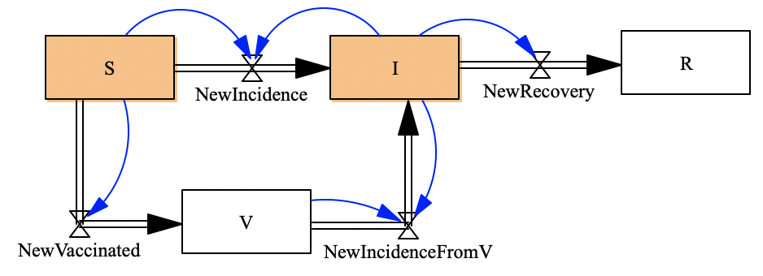
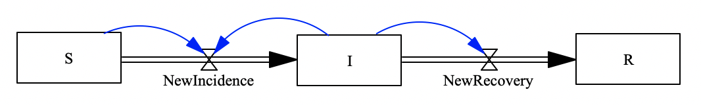
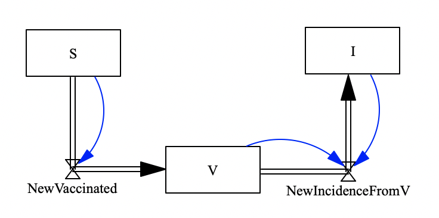

using StockFlow
using Catlab
using Catlab.CategoricalAlgebra
using LabelledArrays
using OrdinaryDiffEq
using Plots
using Catlab.Graphics
using Catlab.Programs
using Catlab.WiringDiagramsProblem: SIRV Model
To compose a SIRV model as follows: 
Step 1. Define sub-components
1.1 Define SIR model

The definition of the SIR model are as follows:
# Define functions ϕ of flows in the SIR model
fNewIncidence(u,p,t)=p.cβ*u.S*u.I/p.N
fNewRecovery(u,p,t)=u.I/p.tr
# StockAndFlowp(stocks,
# (flow=>function, upstream=>d
sir = StockAndFlowp((:S, :I, :R),
((:NewIncidence=>fNewIncidence, :S=>:I)=>(:S,:I),
(:NewRecovery=>fNewRecovery, :I=>:R)=>:I)
)Now, we just created a Stock and Flow Diagram of a SIR model with the primitive schema. We can plot the Stock and Flow Diagram:
Graph(sir)1.2 Define SVI model
The SVI stock and flow Diagram is as follows: 
# Define functions ϕ of flows in the SVI model
fNewIncidenceFromV(u,p,t)=p.cβ*u.V*u.I*(1-p.e)/p.N
fNewVaccinated(u,p,t)=u.S*p.rv
# StockAndFlowp(stocks,
# (flow=>function, upstream=>do
Graph(svi)Composition method 1 – via structured cospan
Open SIR stock and flow Diagram as a structured cospan, with the left leg [:R], and with the right leg [:S, :I]
Open SVI stock and flow Diagram as a structured cospan, with the left leg [:S,:I], and with the right leg [:V]
Now, we can compose those two structured cospan with the common foot [:S,:I]. And the composed model is the SIRV model we need
sirv1=apex()Graph(sirv1)Composition method 2 – via uwd-algebra
Define the composition rule of the uwd-algebra
uwd_sirv =
display_uwd(uwd_sirv)sirv2=oapply(uwd_sirv,Dict()) |> apexGraph(sirv2)Solve the SIRV model
Define constant parameters and initial values
p_sirv = LVector(
cβ=0.2, N=1000, tr=12, rv=0.02, e=0.9
)
# Define initial values for stocks
u0_sirv = LVector(
S=990, I=10, R=0, V=0
)Model results of sirv1 generated by the method of composing the structured cospan
prob_sirv1 = ODEProblem(vectorfield(sirv1),u0_sirv,(0.0,100.0),p_sirv);
sol_sirv1 = solve(prob_sirv1,Tsit5(),abstol=1e-8);
plot(sol_sirv1)Model results of sirv2 generated by the method of composing using uwd-algebra
prob_sirv2 = ODEProblem(vectorfield(sirv2),u0_sirv,(0,100.0),p_sirv)
sol_sirv2 = solve(prob_sirv2,Tsit5(),sbstol=1e-8);
plot(sol_sirv2)